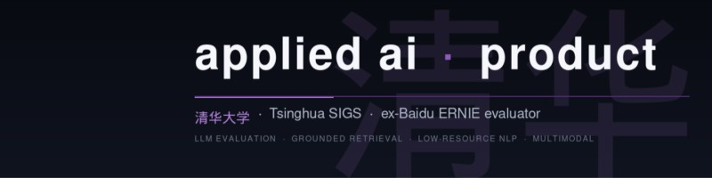

sami el akkad
·
shenzhen · 深圳
·
open to work
Applied AI
Product Manager.
Build. Ship. Repeat.
Tsinghua SIGS AI master's. ex-Baidu ERNIE evaluator (文心导师). Winner of the Tsinghua AIID Yearly Competition on the NetDragon partner track. 3rd Prize at the 2025 Baidu ERNIE Hackathon. Founder of jak.ma — a live Moroccan home-services marketplace. NPU CS undergrad with a 74-page thesis on adaptive multi-objective optimization.
Tsinghua SIGS
ex-Baidu ERNIE
AIID Yearly Winner
NPU CS · B.Eng. 2025
CSC Scholar
HSK 4

sami el akkad · 深圳 2026
